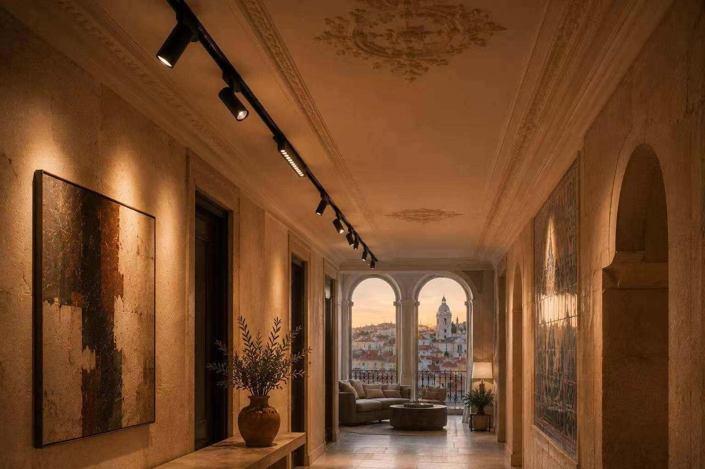

Case Study: How a Lisbon Boutique Hotel Used Magnetic Track Lighting to Unify Its Entire Guest Experience

When Marco Silva, the owner of Casa do Largo, first walked us through his 42-room boutique hotel in Lisbon's Alfama district, he didn't start with technical specs. He started with a feeling.
"Guests come here for the light," he said, pointing to the tall windows overlooking the terracotta rooftops. "But inside, the lighting fights itself. The lobby feels like an airport. The corridors are too dark. The restaurant has beautiful tiles that look gray at night. And every time we want to change a fixture, we have to cut the ceiling."
That conversation became the brief: one lighting system, every space, no compromise on atmosphere. Six months later, Casa do Largo reopened with MAGNETRACK running from lobby to rooftop bar — and the difference, according to their guest reviews, was immediate.
A Building With Too Many Personalities
Casa do Largo is a renovated 19th-century townhouse. Over three renovation phases, it had accumulated a patchwork of lighting: recessed downlights in the lobby, surface-mounted spots in the restaurant, pendants in the bar, and outdated halogen fixtures in the guest rooms. Each space used different color temperatures, beam angles, and control systems.
The result? Guests moved through disconnected environments. The warm 2700K restaurant clashed with the cool 4000K corridor outside. Artwork in the lobby was lost in uneven pools of light. Maintenance staff carried five different lamp types in their toolbox.
Marco needed three things: visual consistency across all guest areas, flexibility to adapt lighting as the hotel evolved, and a system that wouldn't require another ceiling renovation in five years.
One Track, Multiple Languages of Light

We proposed a single 48V magnetic track platform across the entire property. Not because it was simpler on paper, but because it allowed each space to speak its own visual language while sharing the same grammar.
The specification was built around three principles:
- Unified temperature: 2700K throughout all guest-facing areas, with 3000K in back-of-house and service zones
- Layered modules: Spotlights for focus, linear floods for ambient wash, pendant adapters for atmosphere, and grille modules for corridors
- Centralized dimming: DALI control with preset scenes — arrival, evening, late night, and cleaning mode — accessible from reception
Crucially, we selected trimless recessed track for public areas where the architecture needed to breathe, and surface-mounted track for back-of-house and the industrial-style rooftop bar.
The Spaces, One by One
Lobby: The First Impression
The lobby ceiling was restored plaster with original molding — the last place you want visible hardware. We installed a concealed perimeter track that follows the room's geometry, paired with adjustable 24° spotlights aimed at the reception desk, a large abstract painting, and a sculptural seating area.
Linear flood modules provide the ambient layer, washing the textured limestone walls without creating hot spots. The result is a space that feels sunlit even at 9 PM.
Restaurant: Making the Tiles Sing
The restaurant's azulejo tiles were the soul of the space, but under the old halogen spots they looked flat and slightly green. We replaced them with high-CRI 95+ spotlights with 15° beams, positioned to graze the tile surfaces and bring out the cobalt blues and creamy whites.
Above the tables, pendant adapters hold hand-blown glass pendants at varying heights. The magnetic connection meant the electrician could adjust pendant positions in minutes during the final fit-out, without rewiring.
Guest Corridors: Calm Transitions
Corridors are where cheap hotels reveal themselves. We used anti-glare grille modules mounted on continuous surface track, delivering soft, even illumination with UGR below 19. Motion sensors integrated into the DALI system reduce output to 20% after midnight, saving energy while maintaining wayfinding safety.
Guest Rooms: Flexibility for Every Layout
Each room received a short ceiling track above the bed and desk area. Guests can't see it — it's recessed into a minimalist ceiling channel — but hotel staff can reconfigure the room in minutes. Reading spot, bedside pendant, or desk flood: the module snaps into place magnetically and draws power automatically.
This became especially valuable when Casa do Largo converted four standard rooms into a junior suite. No new wiring. No ceiling work. Just a longer track section and two additional modules.
Measured in Atmosphere and Operations
Three months after reopening, we sat down with Marco to review the impact. The feedback crossed every department:
- Guest satisfaction scores for "room ambiance" rose from 3.8 to 4.7 out of 5
- Energy consumption for lighting dropped 34% compared to the previous halogen and fluorescent mix
- Maintenance calls for lighting issues fell to zero in the first quarter
- The interior designer was able to reposition fixtures twice during opening photography without scheduling an electrician
"The best compliment we get now is when guests don't mention the lighting at all. They just say the hotel feels calm, warm, and considered. That's exactly what we wanted." — Marco Silva, Owner, Casa do Largo
What This Project Teaches About Specification
Casa do Largo isn't unique because of its architecture. It's unique because the owner thought of lighting as part of the guest experience rather than a procurement checklist. For architects and contractors working on similar projects, the lessons are clear:
- Start with the feeling, not the fixture. The technical solution follows from the emotional brief.
- One system reduces long-term risk. Training staff, stocking spare parts, and future-proofing renovations all become easier.
- Modularity pays off during changes. Hotels evolve. Guest rooms become suites. Restaurants get re-themed. Magnetic track makes those transitions affordable.
- Control is part of the design. Preset scenes aren't a luxury — they're how you protect the designer's intent from being overridden by staff every evening.
| Space | Track Type | Primary Modules | Control |
|---|---|---|---|
| Lobby | Trimless Recessed 48V | Adjustable Spot + Linear Flood | DALI Scene Presets |
| Restaurant | Trimless Recessed 48V | Narrow Spot + Pendant Adapter | DALI Dimming |
| Corridors | Surface 48V | Anti-Glare Grille Module | DALI + Motion Sensors |
| Guest Rooms | Trimless Recessed 48V | Spot / Flood / Pendant | Local + Central DALI |
| Rooftop Bar | Surface 48V | Pendant + Flood | DALI Scene Presets |
Have a Hospitality Project Coming Up?
We provide complimentary lighting layout proposals for hotel, restaurant, and retail projects. Send us your floor plans, ceiling sections, and design intent — our team will recommend track configuration, module selection, and driver sizing tailored to your space.
Contact MAGNETRACK for a project-specific specification package.